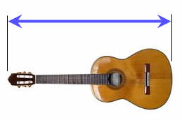
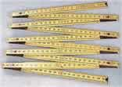
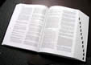

Metric System of Measurement
(Correctly called "SI")
The metric system is a system of measuring. It has three main units:
| m | the meter for length | |
| kg | the kilogram for mass | |
| s | the second for time |
we can measure nearly everything in the world!
Examples:
Meter
The length of this guitar
is about 1 meter:

When unfolded this ruler measures 2 meters:

Kilogram
This gold bar has a mass of 1 kilogram:

A dictionary also has a mass of about 1 kilogram:

Second
Larger or Smaller
But what if we want to talk about really big or really small things?
Answer: we can use Metric Number Prefixes
- like "kilo" (a thousand)
- and "milli" (one thousandth)
- and so on
Examples:
something that is 1,000 meters is a "kilometer"
a very short time of one thousandth of a second is a "millisecond"
In fact the kilogram already uses this method, as it's a thousand grams, a kilogram.
Here is a quick summary of the special prefixes:
Common Big and Small Numbers
| Name | The Number | Prefix | Symbol |
|---|---|---|---|
| trillion | 1,000,000,000,000 | tera | T |
| billion | 1,000,000,000 | giga | G |
| million | 1,000,000 | mega | M |
| thousand | 1,000 | kilo | k |
| hundred | 100 | hecto | h |
| ten | 10 | deka | da |
| unit | 1 | ||
| tenth | 0.1 | deci | d |
| hundredth | 0.01 | centi | c |
| thousandth | 0.001 | milli | m |
| millionth | 0.000 001 | micro | µ |
| billionth | 0.000 000 001 | nano | n |
| trillionth | 0.000 000 000 001 | pico | p |
Examples:
A thousand meters is a kilometer and abbreviated km (k for kilo, m for meter)
A million liters is a megaliter and abbreviated ML
A millionth of a second is a microsecond and abbreviated µs (µ is the greek symbol "mu")
These prefixes are used for computers too! A megabyte (MB) is a million bytes, a gigabyte (GB) is a billion bytes, etc.
How to remember?
For large values (each one a thousand times bigger) say:
"kilo mega giga tera"
And for small values (each one a thousand times smaller) say:
"milli micro nano pico"
Try saying them both a few times, they sort of rhyme and become easy to remember.Making Other Units
We can also combine the meter, kilogram and second to make new Units of Measurement!
Example: Speed
Speed is how far something moves over a period of time
So it can be measured in meters per second
It means: How many meters does something travel in one second
We can write it as meters/second, or more simply m/s
Here are a few common units that are based on the meter, kilogram and second:
Area
Square Meter
Area is length by length, so the basic unit of area is a square that is 1 meter on each side, in other words one square meter.
The Unit is meters × meters, which is written m2
Volume
Cubic Meter
Volume is length by length by length, so the basic unit of volume is a cube that is 1 meter on each side, in other words one cubic meter.
The Unit is meters × meters × meters, which is written m3
Liter
A cube that is 1 meter on each side is also equal to 1,000 liters.
1 m3 = 1,000 Liters
Liter is abbreviated L (some people use lowercase l, but that looks too much like 1).
So a liter is actually one-thousandth of a cubic meter.
1 Liter = 11000 m3
Another way of thinking about a liter is:
- A box that is 0.1 meters (10 cm) on each side,
- One square meter that is millimeter thick.
Time
Hour
An hour is 60 minutes, and a minute is 60 seconds, so an hour is:
- 60 × 60 = 3,600 seconds
Day
A day is 24 hours so:
- 1 day = 24 × 60 × 60 = 86,400 second
Speed
Speed in meters per second (m/s)
This is a combination of two units (meters and seconds) to make a new one (m/s).
If something is moving at 1 m/s it moves 1 meter every second.
Speed in kilometers per hour (km/h)
A kilometer has 1000 meters, and an hour has 3600 seconds, so a kilometer per hour is:
- 1000 / 3600 = 1/3.6 = 0.277... m/s
How did I know to make it 1000/3600, and not 3600/1000 (the other way around)? Read how to Safely Convert From One Unit to Another.
Acceleration
Acceleration is how fast velocity changes.
When a runner accelerates from 5 m/s (5 meter per second) to 6 m/s (6 meters per second) in just one second, they accelerate by 1 meter per second per second!
And yes, "per second" is used twice!
It can be thought of as (m/s)/s but is usually written m/s2
Force
Force is usually measured in the Unit of Newtons, an important measurement in Physics and Engineering.
A Newton is how much force it takes to make 1 kg accelerate at 1 m/s2.
1 Newton = 1 kg m/s2 (one kilogram meter per second squared).
So force is actually based on the meter, kilogram and second.
And so force is a combination of the three basic units.
SI
The Metric System had its beginnings back in 1670 by a mathematician called Gabriel Mouton.
The modern version, (since 1960) is correctly called "International System of Units" or "SI" (from the French "Système International").
So we should really call it "SI", but mostly people just call it "Metric".
A few special units are also needed to complete the SI System:
- ampere for electric current,
- kelvin for temperature,
- mole for the amount of substance, and
- candela for luminous intensity
So the complete list is:
| Quantity | Name | Symbol |
|---|---|---|
| Length | meter | m |
| Mass | kilogram | kg |
| Time | second | s |
| Electric Current | ampere | A |
| Temperature | kelvin | K |
| Amount of substance | mole | mol |
| Luminous intensity | candela | cd |
All other units (such as speed, force, power and many more) are "derived units" that are defined using these seven base units.